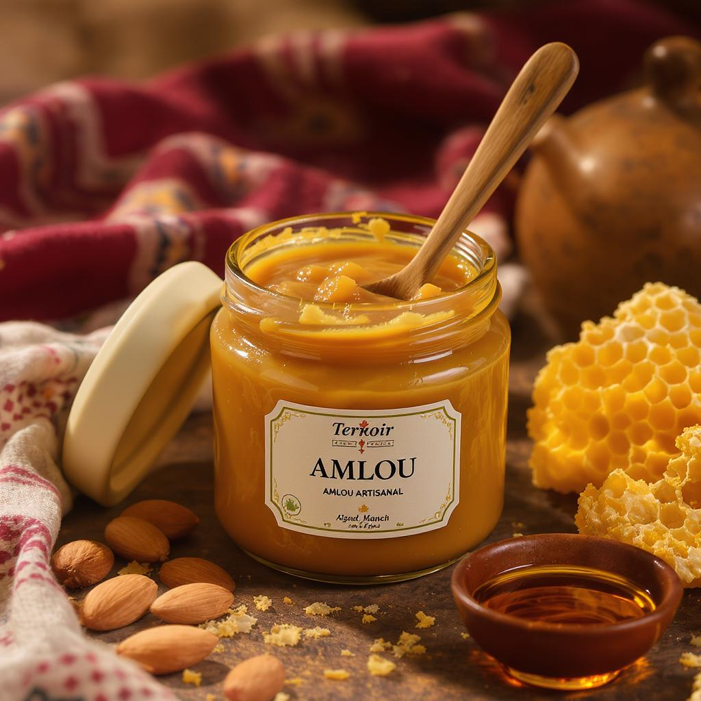
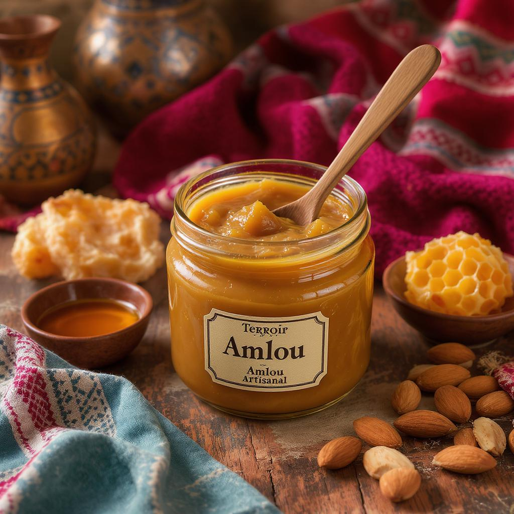

Amlou Traditionnel
L'Amlou est une spécialité culinaire du sud marocain, typique des régions berbères. Composé d'amandes grillées finement broyées, de miel pur et d'huile d'argan, il constitue un aliment riche, énergétique et savoureux. Servi généralement au petit-déjeuner ou avec du pain traditionnel, il est apprécié pour ses vertus nutritionnelles et son goût authentique. Notre Amlou est préparé de façon artisanale à Azilal avec des produits 100% naturels.

Amlou Pot Familial
450g - 675 MAD

Amlou Format Dégustation
150g - 100 MAD
Contactez-nous
Téléphone : +212 6 12 34 56 78
Instagram : @terroir_azilal
Commander Maintenant